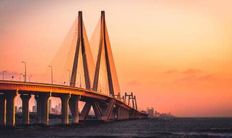

MAHARASHTRA
Maharashtra attracts tourists from other Indian states and foreign countries.
It was the second most visited Indian state by foreigners and fifth most visited state by domestic tourists in the country in 2021.
Aurangabad is the tourism capital of Maharashtra..
FAMOUS TOP 3 TOURIST PLACES TO VISIT IN MAHARASHTRA
- MUMBAI

- MAHABALESHWAR

- LONAVALA

FAMOUS FOOD IN MAHARASHTRA
- Pav Bhaji: Pav Bhaji is the special food of Maharashtra only.
- Vada Pav: Vada Pav is one of the most famous fast food of Maharashtra people. If you will visit Mumbai you will find Vada Pav at every corner.
- Thalipeeth:Thalipeeth is one of the most protein-rich foods of Maharashtra people.